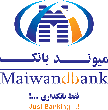
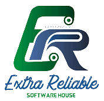
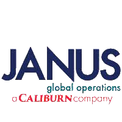

Cuncurrent Audit,
SWIFT Assistant,
Customer Service Representative
04/2011 – 05/2017
Shahr-e-Now
District# 10, Kabul Afg.
I started my first Job in 2011 with Maiwand bank in Kabul,
Afghanistan. my journey with this bank lasted for seven years. I
worked in different sectors as I was being promoted. Maiwand Bank
was a great place.

Database
Developer
08/2018 – 04/2019
Daudzai Business Center,
Kabul (Afghanistan)
Gathering System requirements, and assisting in ERD design were the
prominent part of my Job. I believe communicating is always the key,
and I used my communicating skills to resolve problems and attract
more and more customers for a newly established firm.

Admin Assistant,
Operations Coordinator Assistant
11/2015 – 05/2018
06/2019 - 02/2020
Zohak Vilage, Hawas Shinasi
Road Kabul Afg.
I served with Janus two times in three different sectors.
Coordination with sites was a prominent part of my job. It was my
first experience working together with people from over five
different nations.